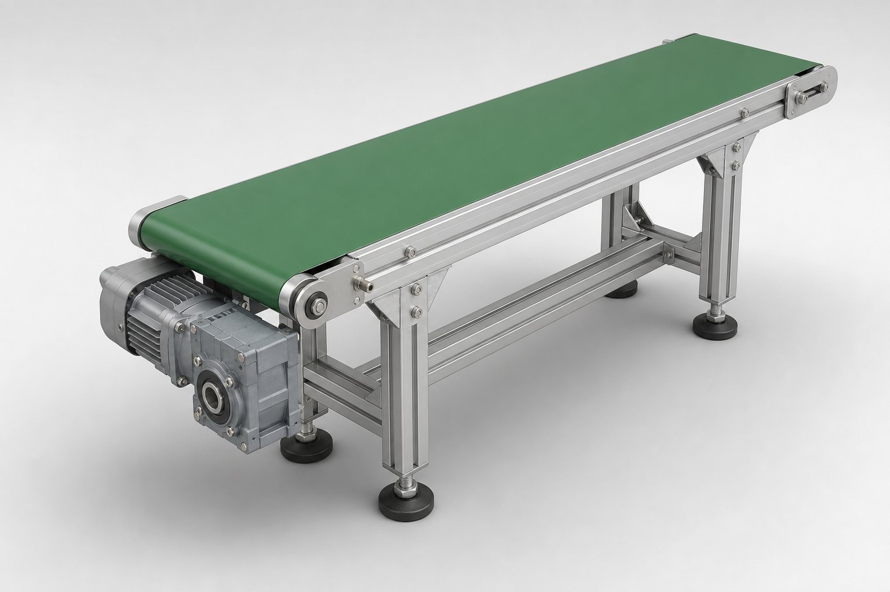

컨베이어 형상 · 입력값 실시간 오버레이

알루미늄 프로파일 프레임 · 기어드모터 직결 구동 · 지시선은 입력값이 적용되는 부위를 나타냅니다
출력 회전수
—
rpm
벨트속도
—
—
총 이동질량
—
—
유효장력
—
N
필요동력
—
—
동력 여유율
—
30% 이상 권장
—
—
판정 근거 — 6단계 계산 (제목에 hover 하면 요약, 펼치면 상세)
STEP 1벨트속도 v—
v = π × D × (모터rpm ÷ 감속비 i) [mm/min]
—
STEP 2벨트 자중 및 총 이동질량—
mbelt = (2 × C) × B × 3.0 kg/m² mtotal = 총하중 + mbelt (마찰 관여 직선 2구간 기준 / 벨트 전장은 2C + πD)
—
STEP 3유효장력 Fe—
Fe = m · g · (μ · cosθ + sinθ) g = 9.81 m/s²
—
STEP 4구동풀리 토크 (운전 / 설계 / 모터샤트)—
① 정상운전 Trun = Fe × (D ÷ 2) ② 설계 필요토크 Treq = Trun × Sf ③ 모터샤트 환산 Tmotor = Treq ÷ (i × η)
—
STEP 5필요동력 Preq—
Preq = Fe × v × Sf ÷ η (v는 m/s 환산값)
—
STEP 6여유율 판정—
동력 용량비 = 모터출력 ÷ 필요동력 × 100 [%] 여유율 = (모터출력 − 필요동력) ÷ 필요동력 × 100 [%]
—
선택된 지지방식 단면도
지지방식(무동력 지지 구조) 5종 상세 — 카드를 눌러 선택
⚠ 여기서 말하는 «롤러»는 모두 동력이 없는 지지(캐리어/아이들러) 롤러입니다.
파워몰러(Power Moller, MDR)처럼 롤러 안에 모터·감속기가 들어간 제품은 구동부(구동풀리·기어드모터 대체)이므로
이 5종에 포함되지 않으며, 툴에서는 ②구동부 입력(모터 정격출력·회전수·감속비·풀리지름)으로 다룹니다.
지지방식 비교표 — 현재 조건에서 방식만 바꿔 계산
| 지지방식 | μ | 필요동력 | 여유율 | 판정 | 초기비용 | 소음 | 유지보수 | 주요 적용처 |
|---|
롤러 처짐 검증 (피치 스윕)
| 피치 p | 처짐량 s | 처짐률 | 롤러 개수 | 롤러당 하중 | 판정 |
|---|
처짐률 기준: 1.0% 이하 안전 / 1.0~2.0% 주의 / 2.0% 초과 불가.
s = w·p² ÷ (8·T), 초기장력 T = 벨트폭 × 1.0 N/mm 로 가정합니다.